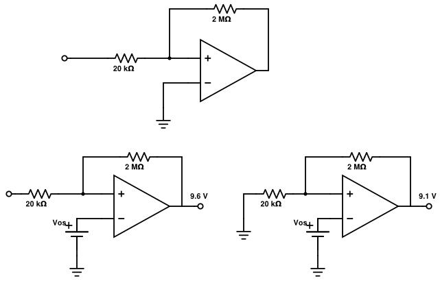

An inverting amplifier uses an imperfect op amp and a 20 kΩ resistor(R11) and a 2 MΩ resistor (R2). Due to the existence of an offset voltage: when the input is left open, Vo is measured to be 9.6 V, and when the input is ground, Vois measured to be 9.1 V.
Find the nominal closed loop gain.
\[ A = -\frac{R_2}{R_1} = -\frac{2M}{20k} = -100 \]
Assume the input bias currents of the two input terminals are close and can be approximated as iB. Estimate iB.
\[ \frac{9.6 - V_{os}}{2M} \] \[ \frac{9.1 - V_{os}}{2M} = i_B + \frac{V_{os}}{20k} \] \[ \frac{9.6 - V_{os}}{2M} + \frac{V_{os}}{20k} = \frac{9.1 - V_{os}}{2M} \] \[ 9.6 - V_{os} + 100V_{os} = 9.1 - V_{os} \] \[ V_{os} = \frac{-0.5}{100} = -5 mV \] \[ i_B = \frac{9.6 + .005}{2M} = 4.8 \mu A \]
For clarification, the current is flowing from the output terminal to the inverting terminal and the ground (when grounded that is).